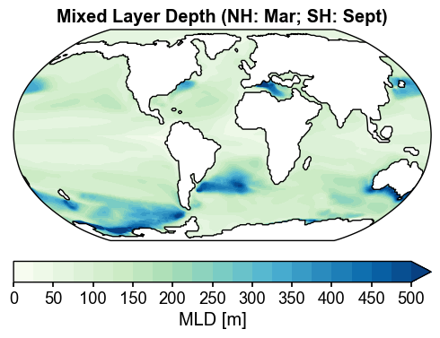

Diagnostics: OCN#
[1]:
%load_ext autoreload
%autoreload 2
import os
os.chdir('/glade/u/home/fengzhu/Github/x4c/docsrc/notebooks')
import numpy as np
import x4c
print(x4c.__version__)
2024.4.20
Load a postprocessed CESM timeseries case#
[2]:
dirpath = '/glade/campaign/univ/ubrn0018/fengzhu/CESM_output/timeseries/b.e13.B1850C5.ne16_g16.icesm131_d18O_fixer.Miocene.3xCO2.005'
case = x4c.Timeseries(dirpath)
>>> case.root_dir: /glade/campaign/univ/ubrn0018/fengzhu/CESM_output/timeseries/b.e13.B1850C5.ne16_g16.icesm131_d18O_fixer.Miocene.3xCO2.005
>>> case.path_pattern: comp/proc/tseries/month_1/casename.mdl.h_str.vn.timespan.nc
>>> case.grid_dict: {'atm': 'ne16', 'lnd': 'ne16', 'rof': 'ne16', 'ocn': 'g16', 'ice': 'g16'}
>>> case.vars_info created
ts:SSH#
[15]:
x4c.set_style('web', font_scale=1.2)
spell = 'ts:SSH:ann:gm'
case.calc(spell, load_idx=-1)
fig, ax = case.plot(spell)
>>> case.ds["SSH"] already loaded; to reload, run case.clear_ds("SSH") before case.load("SSH")
>>> case.diags["ts:SSH:ann:gm"] created

map:SSH#
[17]:
x4c.set_style('journal', font_scale=1.2)
spell = 'map:SSH:ann'
case.calc(spell, load_idx=-1)
fig, ax = case.plot('map:SSH:ann')
>>> case.ds["SSH"] already loaded; to reload, run case.clear_ds("SSH") before case.load("SSH")
>>> case.diags["map:SSH:ann"] created
>>> case.ds["SSH"] already loaded; to reload, run case.clear_ds("SSH") before case.load("SSH")

map:SST#
[14]:
x4c.set_style('journal', font_scale=1.2)
case.calc('map:SST:ann', load_idx=-1)
fig, ax = case.plot(
'map:SST:ann',
figsize=(6, 6),
cbar_kwargs={'orientation': 'horizontal', 'aspect': 20, 'pad': 0.05},
)
x4c.showfig(fig)
# x4c.savefig(fig, './figs/map_SST_ann.png', dpi=300)
x4c.savefig(fig, './figs/map_SST_ann.pdf')
>>> case.ds["TEMP"] created
>>> case.diags["map:SST:ann"] created
>>> case.ds["SSH"] created

Figure saved at: "figs/map_SST_ann.pdf"
[9]:
import pandas as pd
filename='/glade/work/fengzhu/Projects/MioMIP1/MidMiocene_SST_v2.csv'
MIDMIO_SST = pd.read_csv(filename, header=0, sep=',')[['Site', 'Mid Miocene SST', 'Mid Miocene Uncertainty', 'Mid Miocene Lat', 'Mid Miocene Lon', 'Mid Miocene Adjusted']]
MIDMIO_SST
[9]:
| Site | Mid Miocene SST | Mid Miocene Uncertainty | Mid Miocene Lat | Mid Miocene Lon | Mid Miocene Adjusted | |
|---|---|---|---|---|---|---|
| 0 | DSDP594 | 23.20 | 3.00 | -48.93 | 178.21 | 178.21 |
| 1 | 608Uk37 | 27.22 | 3.00 | 41.51 | -23.46 | 336.54 |
| 2 | 608Tex86 | 25.63 | 8.14 | 41.55 | -23.45 | 336.55 |
| 3 | 722 | 30.74 | 4.01 | 15.94 | 61.43 | 61.43 |
| 4 | 730 | 31.25 | 4.05 | 7.33 | 57.23 | 57.23 |
| 5 | 761 | 28.80 | 4.00 | -23.06 | 112.79 | 112.79 |
| 6 | 806Tex86 | 30.23 | 5.00 | -2.09 | 168.89 | 168.89 |
| 7 | 846 | 28.75 | 3.00 | -5.62 | -80.77 | 279.23 |
| 8 | 850Tex86 | 27.84 | 5.00 | -2.51 | -101.12 | 258.88 |
| 9 | 850Uk37 | 28.33 | 3.00 | -2.51 | -101.12 | 258.88 |
| 10 | 907 | 18.79 | 3.00 | 67.86 | -15.47 | 344.53 |
| 11 | 925Uk37 | 27.86 | 3.00 | 2.58 | -38.55 | 321.45 |
| 12 | 925Tex86 | 27.63 | 5.00 | 2.58 | -38.55 | 321.45 |
| 13 | 926 | 27.23 | 4.00 | 1.65 | -37.66 | 322.34 |
| 14 | 982Uk37L | 26.62 | 3.00 | 56.72 | -17.33 | 342.67 |
| 15 | 982Tex86 | 24.09 | 6.11 | 56.18 | -17.20 | 342.80 |
| 16 | 982Uk37S | 24.36 | 3.00 | 56.23 | -17.16 | 342.84 |
| 17 | 1010 | 27.17 | 3.00 | 26.09 | -108.69 | 251.31 |
| 18 | 1021 | 22.13 | 3.00 | 34.88 | -118.60 | 241.40 |
| 19 | 1085Uk37 | 26.68 | 3.00 | -31.14 | 14.32 | 14.32 |
| 20 | 1085Tex86 | 28.90 | 5.00 | -31.15 | 14.32 | 14.32 |
| 21 | 1088 | 20.56 | 3.00 | -42.07 | 14.45 | 14.45 |
| 22 | 1092 | 13.09 | 4.00 | -47.70 | 7.57 | 7.57 |
| 23 | 1146 | 27.92 | 4.00 | 21.18 | 117.57 | 117.57 |
| 24 | U1338 | 28.29 | 3.00 | -7.02 | -107.26 | 252.74 |
| 25 | U1356 | 9.54 | 5.00 | -61.84 | 133.96 | 133.96 |
| 26 | 1171 | 15.89 | 4.00 | -55.02 | 149.60 | 149.60 |
| 27 | AND2A | 6.07 | 5.00 | -76.85 | 157.09 | 157.09 |
| 28 | LOM1 | 24.75 | 4.00 | 48.94 | 14.90 | 14.90 |
| 29 | Med | 28.37 | 3.00 | 42.91 | 13.55 | 13.55 |
[23]:
x4c.set_style('journal', font_scale=1.2)
case.calc('map:SST:ann', load_idx=-1)
fig, ax = case.plot(
'map:SST:ann',
figsize=(6, 6),
cbar_kwargs={'orientation': 'horizontal', 'aspect': 20, 'pad': 0.05},
df_sites=MIDMIO_SST, colname_dict={
'lat': 'Mid Miocene Lat',
'lon': 'Mid Miocene Lon',
'value': 'Mid Miocene SST',
}
)
x4c.showfig(fig)
x4c.savefig(fig, './figs/map_SST_ann_with_sites.pdf')
/glade/u/home/fengzhu/Github/x4c/x4c/core.py:48: AccessorRegistrationWarning: registration of accessor <class 'x4c.core.XDataset'> under name 'x' for type <class 'xarray.core.dataset.Dataset'> is overriding a preexisting attribute with the same name.
@xr.register_dataset_accessor('x')
/glade/u/home/fengzhu/Github/x4c/x4c/core.py:148: AccessorRegistrationWarning: registration of accessor <class 'x4c.core.XDataArray'> under name 'x' for type <class 'xarray.core.dataarray.DataArray'> is overriding a preexisting attribute with the same name.
@xr.register_dataarray_accessor('x')
>>> case.ds["TEMP"] already loaded; to reload, run case.clear_ds("TEMP") before case.load("TEMP")
>>> case.diags["map:SST:ann"] created
>>> case.ds["SSH"] already loaded; to reload, run case.clear_ds("SSH") before case.load("SSH")

Figure saved at: "figs/map_SST_ann_with_sites.pdf"
[4]:
case.calc('map:SST:-12,1,2', load_idx=-1)
fig, ax = case.plot(
'map:SST:-12,1,2',
figsize=(6, 6),
cbar_kwargs={'orientation': 'horizontal', 'aspect': 20, 'pad': 0.05},
)
x4c.showfig(fig)
>>> case.ds["TEMP"] already loaded; to reload, run case.clear_ds("TEMP") before case.load("TEMP")
>>> case.diags["map:SST:-12,1,2"] created
>>> case.ds["SSH"] already loaded; to reload, run case.clear_ds("SSH") before case.load("SSH")

[5]:
case.calc('map:SST:6,7,8', load_idx=-1)
fig, ax = case.plot(
'map:SST:6,7,8',
figsize=(6, 6),
cbar_kwargs={'orientation': 'horizontal', 'aspect': 20, 'pad': 0.05},
)
x4c.showfig(fig)
>>> case.ds["TEMP"] already loaded; to reload, run case.clear_ds("TEMP") before case.load("TEMP")
>>> case.diags["map:SST:6,7,8"] created
>>> case.ds["SSH"] already loaded; to reload, run case.clear_ds("SSH") before case.load("SSH")

zm:SST#
[28]:
x4c.set_style('journal_spines', font_scale=1.2)
case.calc('zm:SST:ann', load_idx=-1)
fig, ax = case.plot(
'zm:SST:ann',
figsize=(6, 4)
)
>>> case.ds["TEMP"] already loaded but will be reloaded due to a different `load_idx`
>>> case.ds["TEMP"] created
>>> case.diags["zm:SST:ann"] created

[31]:
import pandas as pd
filename='/glade/work/fengzhu/Projects/MioMIP1/MidMiocene_SST_v2.csv'
MIDMIO_SST = pd.read_csv(filename, header=0, sep=',')
MIDMIO_SST2=MIDMIO_SST.values[:,:]
MidMioSSTLat=np.asarray(MIDMIO_SST2[:,3],dtype=np.float64)
MidMioSST=np.asarray(MIDMIO_SST2[:,1],dtype=np.float64)
MidMioSST_ucert=np.asarray(MIDMIO_SST2[:,2],dtype=np.float64)
ds_PA = x4c.load_dataset('/glade/campaign/univ/ubrn0018/data/climo/B.MMIOx2_C5_840_WISOon.pop.h.2100-2199.climo.nc', comp='ocn', grid='g16')
da_PA_zm = ds_PA.x.regrid()['TEMP'][:,0].x.annualize().x.zm
da_PA_zm
[31]:
<xarray.DataArray 'TEMP' (lat: 180)> Size: 720B
array([ nan, nan, nan, nan, nan,
0.2673309, 0.3634501, 3.5033424, 3.5339067, 3.8256083,
3.6205215, 3.7401273, 4.1724296, 4.4663553, 5.0800996,
5.6029963, 6.0672383, 6.5788627, 6.999275 , 7.1731696,
7.533307 , 7.927508 , 8.248237 , 8.561992 , 8.952745 ,
9.411765 , 9.877345 , 10.334092 , 10.7678995, 11.205135 ,
11.660148 , 12.158106 , 12.640494 , 13.086753 , 13.523805 ,
13.977385 , 14.449169 , 14.960231 , 15.460107 , 15.984028 ,
16.517704 , 17.096708 , 17.732351 , 18.387835 , 19.080921 ,
19.75384 , 20.43274 , 21.079834 , 21.747126 , 22.34627 ,
22.99355 , 23.607145 , 24.193678 , 24.676556 , 25.174402 ,
25.591242 , 26.049147 , 26.477413 , 26.892586 , 27.275675 ,
27.628553 , 27.939531 , 28.268478 , 28.580797 , 28.85765 ,
29.120752 , 29.405653 , 29.709394 , 30.008183 , 30.320217 ,
30.59329 , 30.885372 , 31.139095 , 31.388248 , 31.630432 ,
31.86111 , 32.071037 , 32.26839 , 32.44593 , 32.61328 ,
32.78369 , 32.90127 , 32.976357 , 33.0222 , 32.993732 ,
32.86015 , 32.7311 , 32.552868 , 32.30569 , 32.102833 ,
32.095783 , 32.284523 , 32.498497 , 32.63904 , 32.73132 ,
32.79422 , 32.813797 , 32.763573 , 32.667927 , 32.516872 ,
32.391815 , 32.314613 , 32.205994 , 32.07376 , 31.912245 ,
31.707167 , 31.467358 , 31.207762 , 30.942924 , 30.661072 ,
30.330761 , 30.06966 , 29.831743 , 29.573656 , 29.334723 ,
28.983208 , 28.621643 , 28.26228 , 27.897905 , 27.499619 ,
27.07939 , 26.65505 , 26.176842 , 25.812988 , 25.479013 ,
25.121025 , 24.698107 , 24.221159 , 23.66383 , 23.061043 ,
22.333918 , 21.538013 , 20.743088 , 20.027006 , 19.334446 ,
18.61486 , 17.806908 , 16.89044 , 15.849317 , 15.171688 ,
14.532024 , 13.997538 , 13.63762 , 13.228438 , 12.87071 ,
12.571904 , 12.331758 , 12.053435 , 11.811791 , 11.589984 ,
11.316099 , 10.997011 , 10.602679 , 10.413075 , 10.095611 ,
9.513512 , 8.846073 , 8.510004 , 8.270212 , 7.780397 ,
7.137388 , 6.588673 , 6.1316133, 5.472239 , 5.0998745,
4.7094293, 4.5319743, 4.414915 , 4.341426 , 4.2446575,
4.16966 , 4.047253 , 3.9693236, 3.930571 , 3.8884203,
3.8491242, 3.8085063, 3.8022444, 3.822652 , 3.8483775],
dtype=float32)
Coordinates:
* lat (lat) float64 1kB -89.5 -88.5 -87.5 ... 87.5 88.5 89.5
z_t float32 4B 500.0
latitude_longitude float64 8B nan
Attributes:
long_name: Potential Temperature
units: degC
grid_loc: 3111
cell_methods: time: mean within years time: mean over years[32]:
dirpath = '/glade/campaign/univ/ubrn0018/fengzhu/CESM_output/timeseries/b.e13.B1850C5.ne16_g16.icesm131_d18O_fixer.Miocene.1.5xCO2.005'
case2 = x4c.Timeseries(dirpath)
case2.calc('zm:SST:ann')
>>> case.root_dir: /glade/campaign/univ/ubrn0018/fengzhu/CESM_output/timeseries/b.e13.B1850C5.ne16_g16.icesm131_d18O_fixer.Miocene.1.5xCO2.005
>>> case.path_pattern: comp/proc/tseries/month_1/casename.mdl.h_str.vn.timespan.nc
>>> case.grid_dict: {'atm': 'ne16', 'lnd': 'ne16', 'rof': 'ne16', 'ocn': 'g16', 'ice': 'g16'}
>>> case.vars_info created
>>> case.ds["TEMP"] created
>>> case.diags["zm:SST:ann"] created
[35]:
case2.diags['zm:SST:Acosta'] = da_PA_zm
[42]:
import xarray as xr
MioMIP1=xr.open_dataset('/glade/work/fengzhu/Projects/MioMIP1/MioMIP1.nc',decode_times=False)
[57]:
clr_dict = {
# 'COSMOS Late Miocene 278ppm': 'tab:cyan',
# 'COSMOS Late Miocene 450ppm': 'tab:cyan',
# 'COSMOS Late Miocene ICEQ 278ppm': 'tab:cyan',
# 'COSMOS Late Miocene ICEQ 450ppm': 'tab:cyan',
# 'NorESM-L 10Ma 350ppm': 'tab:brown',
# 'NorESM-L 10Ma 560ppm': 'tab:brown',
# 'CCSM-NH3 355ppm': 'tab:blue',
# 'CCSM-NH3 560ppm': 'tab:blue',
'CCSM3 T42 MMCO 400ppm': 'tab:blue',
# 'CCSM3 T42 MMCO 200ppm': 'tab:blue',
# 'CCSM3 T42 MMG 200ppm': 'tab:blue',
# 'CCSM3 T42 MMG 400ppm': 'tab:blue',
'CCSM4 400ppm': 'tab:blue',
'CESM1 400ppm': 'tab:blue',
# 'COSMOS Mid Miocene 278ppm': 'tab:green',
'COSMOS Mid Miocene 450ppm': 'tab:green',
# 'HadCM3L Mid Miocene 90SLE 280ppm': 'tab:red',
# 'HadCM3L Mid Miocene 90SLE 400ppm': 'tab:red',
# 'HadCM3L Mid Miocene 90SLE 560ppm': 'tab:red',
'HadCM3L Mid Miocene 90SLE 850ppm': 'tab:red',
# 'HadCM3L Mid Miocene 55SLE 280ppm': 'tab:red',
# 'HadCM3L Mid Miocene 55SLE 400ppm': 'tab:red',
# 'HadCM3L Mid Miocene 55SLE 560ppm': 'tab:red',
'HadCM3L Mid Miocene 55SLE 850ppm': 'tab:red',
# 'HadCM3L Mid Miocene NoICE 280ppm': 'tab:red',
# 'HadCM3L Mid Miocene NoICE 400ppm': 'tab:red',
# 'HadCM3L Mid Miocene NoICE 560ppm': 'tab:red',
'HadCM3L Mid Miocene NoICE 850ppm': 'tab:red',
# 'HadCM3L Langhian 280ppm': 'tab:red',
# 'HadCM3L Langhian 400ppm': 'tab:red',
# 'HadCM3L Langhian 560ppm': 'tab:red',
# 'HadCM3L Late Miocene 280ppm': 'tab:red',
# 'HadCM3L Late Miocene 400ppm': 'tab:red',
# 'HadCM3L Tortonian 400ppm': 'tab:red',
# 'HadCM3L Messinian 400ppm': 'tab:red',
# 'IPSLCM 20Ma 420ppm': 'tab:orange',
# 'IPSLCM 20Ma 560ppm': 'tab:orange',
# 'IPSLCM 20Ma 840ppm': 'tab:orange',
# 'IPSLCM 20Ma NoGIS 560ppm': 'tab:orange',
# 'NorESM-L 20Ma 350ppm': 'tab:purple',
# 'NorESM-L 20Ma 560ppm': 'tab:purple',
}
x4c.set_style('journal_spines', font_scale=1.2)
case.calc('zm:SST:ann', load_idx=-1)
fig, ax = case.plot('zm:SST:ann', figsize=(6, 4), label='iCESM1.3 854ppm', color='tab:orange', zorder=101, lw=5)
ax = case2.plot('zm:SST:Acosta', ax=ax, label='Acosta et al., 840ppm', color='tab:brown', zorder=99, lw=3)
for exp, clr in clr_dict.items():
MioMIP1.SST_ZM.sel(exp=exp).plot(ax=ax, label=exp, color=clr)
ax = case2.plot('zm:SST:ann', ax=ax, label='iCESM1.3 427ppm', linestyle='--', color='tab:orange', zorder=100, lw=3, ylim=(-5, 40))
ax.errorbar(MidMioSSTLat, MidMioSST, yerr=MidMioSST_ucert, ls='none', color='k', zorder=102)
ax.plot(MidMioSSTLat, MidMioSST, marker='o', ls='none', color='k', label='Proxies', zorder=102)
# ax.legend(frameon=False, bbox_to_anchor=(1, 1))
x4c.showfig(fig)
x4c.savefig(fig, './figs/zm_SST_ann_compare_model-data.pdf')
>>> case.ds["TEMP"] already loaded; to reload, run case.clear_ds("TEMP") before case.load("TEMP")
>>> case.diags["zm:SST:ann"] created

Figure saved at: "figs/zm_SST_ann_compare_model-data.pdf"
[5]:
x4c.set_style('journal', font_scale=1.2)
case.calc('zm:SST:6,7,8', load_idx=-1)
fig, ax = case.plot(
'zm:SST:6,7,8',
figsize=(6, 4)
)
>>> case.ds["TEMP"] already loaded; to reload, run case.clear_ds("TEMP") before case.load("TEMP")
>>> case.diags["zm:SST:6,7,8"] created

[6]:
x4c.set_style('journal', font_scale=1.2)
case.calc('zm:SST:-12,1,2', load_idx=-1)
fig, ax = case.plot(
'zm:SST:-12,1,2',
figsize=(6, 4)
)
>>> case.ds["TEMP"] already loaded; to reload, run case.clear_ds("TEMP") before case.load("TEMP")
>>> case.diags["zm:SST:-12,1,2"] created

[7]:
x4c.set_style('journal_spines', font_scale=1.2)
fig, ax = case.plot('zm:SST:ann', figsize=(6, 4), label='Annual', color='tab:orange', lw=5, ylim=(-35, 40))
ax = case.plot('zm:SST:6,7,8', ax=ax, label='JJA', color='tab:red', ylim=(-35, 40))
ax = case.plot('zm:SST:-12,1,2', ax=ax, label='DJF', color='tab:blue', ylim=(-35, 40))
ax.set_title('MCO (3xCO2) \nZonal Mean Sea Surface Temperature', weight='bold')
ax.legend(loc='lower center')
x4c.showfig(fig)
x4c.savefig(fig, './figs/zm_SST_compare_seasons.pdf')

Figure saved at: "figs/zm_SST_compare_seasons.pdf"
[6]:
case.clear_ds() # note that this step is necessary here
case.calc('zm:SST:ann', load_idx=20)
fig, ax = case.plot('zm:SST:ann', figsize=(6, 4), label='0001-0050', color='tab:blue')
>>> case.ds["TEMP"] created
>>> case.diags["zm:SST:ann"] created

[24]:
x4c.set_style('journal_spines', font_scale=1.2)
case.calc('zm:SST:ann', load_idx=0)
fig, ax = case.plot('zm:SST:ann', figsize=(6, 4), label='0001-0050', color='tab:blue')
case.calc('zm:SST:ann', load_idx=20)
ax = case.plot('zm:SST:ann', ax=ax, label='1001-1050', color='tab:orange')
case.calc('zm:SST:ann', load_idx=-1)
ax = case.plot('zm:SST:ann', ax=ax, label='6951-7000', color='tab:red')
ax.set_title('MCO (3xCO2) \nZonal Mean Sea Surface Temperature', weight='bold')
ax.legend(loc='lower center')
x4c.showfig(fig)
x4c.savefig(fig, './figs/zm_SST_compare_spin-ups.pdf')
>>> case.ds["TEMP"] already loaded but will be reloaded due to a different `load_idx`
>>> case.ds["TEMP"] created
>>> case.diags["zm:SST:ann"] created
>>> case.ds["TEMP"] already loaded but will be reloaded due to a different `load_idx`
>>> case.ds["TEMP"] created
>>> case.diags["zm:SST:ann"] created
>>> case.ds["TEMP"] already loaded but will be reloaded due to a different `load_idx`
>>> case.ds["TEMP"] created
>>> case.diags["zm:SST:ann"] created

Figure saved at: "figs/zm_SST_compare_spin-ups.pdf"
map:MLD#
[10]:
x4c.set_style('journal_spines', font_scale=1.2)
case.calc('map:MLD:3', load_idx=-1)
fig, ax = case.plot(
'map:MLD:3',
figsize=(6, 6),
cbar_kwargs={'orientation': 'horizontal', 'aspect': 20, 'pad': 0.05},
)
>>> case.ds["XMXL"] already loaded; to reload, run case.clear_ds("XMXL") before case.load("XMXL")
>>> case.diags["map:MLD:3"] created
>>> case.ds["SSH"] already loaded; to reload, run case.clear_ds("SSH") before case.load("SSH")

[11]:
case.calc('map:MLD:9', load_idx=-1)
fig, ax = case.plot(
'map:MLD:9',
figsize=(6, 6),
cbar_kwargs={'orientation': 'horizontal', 'aspect': 20, 'pad': 0.05},
)
>>> case.ds["XMXL"] already loaded; to reload, run case.clear_ds("XMXL") before case.load("XMXL")
>>> case.diags["map:MLD:9"] created
>>> case.ds["SSH"] already loaded; to reload, run case.clear_ds("SSH") before case.load("SSH")

[12]:
mask = case.diags['map:MLD:3'].lat > 0
case.diags['map:MLD:mix'] = case.diags['map:MLD:3'].where(mask, other=case.diags['map:MLD:9'])
fig, ax = case.plot(
'map:MLD:mix',
figsize=(6, 6),
cbar_kwargs={'orientation': 'horizontal', 'aspect': 20, 'pad': 0.05},
)
ax.set_title('Mixed Layer Depth (NH: Mar; SH: Sept)', weight='bold')
x4c.showfig(fig)
x4c.savefig(fig, './figs/map_MLD_mix.pdf')
>>> case.ds["SSH"] already loaded; to reload, run case.clear_ds("SSH") before case.load("SSH")

Figure saved at: "figs/map_MLD_mix.pdf"
ts:MOC#
[15]:
x4c.set_style('web', font_scale=1.2)
case.calc('ts:MOC:ann', load_idx=-1, moc_z=slice(0.5, None), lat_aux_grid=slice(-90, -28))
fig, ax = case.plot('ts:MOC:ann')
>>> case.ds["MOC"] created
>>> case.diags["ts:MOC:ann"] created

yz:MOC#
[16]:
x4c.set_style('journal_spines', font_scale=1.2)
case.calc('yz:MOC:ann', load_idx=-1)
fig, ax = case.plot('yz:MOC:ann')
x4c.showfig(fig)
x4c.savefig(fig, './figs/yz_MOC_ann.pdf')
>>> case.ds["MOC"] already loaded; to reload, run case.clear_ds("MOC") before case.load("MOC")
>>> case.diags["yz:MOC:ann"] created

Figure saved at: "figs/yz_MOC_ann.pdf"
ysig2:MOC#
[15]:
ds = x4c.load_dataset(case.ds['SSH'].attrs['source'])
ds
[15]:
<xarray.Dataset> Size: 316MB
Dimensions: (moc_comp: 3, transport_comp: 5, transport_reg: 1,
z_t: 60, z_t_150m: 15, z_w: 60, z_w_top: 60,
z_w_bot: 60, lat_aux_grid: 91, moc_z: 61, nlat: 384,
nlon: 320, time: 600, d2: 2)
Coordinates:
* z_t (z_t) float32 240B 500.0 1.5e+03 ... 5.375e+05
* z_t_150m (z_t_150m) float32 60B 500.0 1.5e+03 ... 1.45e+04
* z_w (z_w) float32 240B 0.0 1e+03 2e+03 ... 5e+05 5.25e+05
* z_w_top (z_w_top) float32 240B 0.0 1e+03 ... 5e+05 5.25e+05
* z_w_bot (z_w_bot) float32 240B 1e+03 2e+03 ... 5.5e+05
* lat_aux_grid (lat_aux_grid) float32 364B -90.0 -88.0 ... 88.0 90.0
* moc_z (moc_z) float32 244B 0.0 1e+03 ... 5.25e+05 5.5e+05
ULONG (nlat, nlon) float64 983kB 343.5 344.8 ... 326.7 327.0
ULAT (nlat, nlon) float64 983kB -87.53 -87.52 ... 72.64
TLONG (nlat, nlon) float64 983kB 341.6 342.9 ... 326.5 326.8
TLAT (nlat, nlon) float64 983kB -87.73 -87.72 ... 72.52
* time (time) object 5kB 6951-02-01 00:00:00 ... 7001-01-0...
Dimensions without coordinates: moc_comp, transport_comp, transport_reg, nlat,
nlon, d2
Data variables: (12/54)
moc_components (moc_comp) |S256 768B b'Eulerian Mean' ... b'Submeso'
transport_components (transport_comp) |S256 1kB b'Total' ... b'Submeso A...
transport_regions (transport_reg) |S256 256B b'Global Ocean - Margina...
dz (z_t) float32 240B 1e+03 1e+03 ... 2.5e+04 2.5e+04
dzw (z_w) float32 240B 500.0 1e+03 ... 2.499e+04 2.5e+04
KMT (nlat, nlon) float64 983kB 0.0 0.0 0.0 ... 0.0 0.0 0.0
... ...
salinity_factor float64 8B -0.00347
sflux_factor float64 8B 0.1
nsurface_t float64 8B 7.887e+04
nsurface_u float64 8B 7.669e+04
time_bound (time, d2) object 10kB 6951-01-01 00:00:00 ... 7001...
SSH (time, nlat, nlon) float32 295MB nan nan ... nan nan
Attributes:
title: b.e13.B1850C5.ne16_g16.icesm131_d18O_fixer.Miocene.3xCO2...
history: none
Conventions: CF-1.0; http://www.cgd.ucar.edu/cms/eaton/netcdf/CF-curr...
contents: Diagnostic and Prognostic Variables
source: /glade/campaign/univ/ubrn0018/fengzhu/CESM_output/timese...
revision: $Id: tavg.F90 56176 2013-12-20 18:35:46Z mlevy@ucar.edu $
calendar: All years have exactly 365 days.
start_time: This dataset was created on 2024-04-12 at 02:06:24.5
cell_methods: cell_methods = time: mean ==> the variable values are av...
nsteps_total: 101471200
tavg_sum: 2678399.99999999
tavg_sum_qflux: 2678400.0[9]:
case.load('SSH')
>>> case.ds["SSH"] created
[ ]:
da = case.calc('ysig2:MOC:ann')
da
yz:PD#
[26]:
x4c.set_style('journal_spines_nogrid', font_scale=1.2)
case.calc('yz:PD:ann', load_idx=-1)
fig, ax = case.plot('yz:PD:ann')
x4c.savefig(fig, './figs/yz_PD_ann.pdf')
>>> case.ds["PD"] already loaded; to reload, run case.clear_ds("PD") before case.load("PD")
>>> case.diags["yz:PD:ann"] created
Figure saved at: "figs/yz_PD_ann.pdf"
[20]:
case.diags["map:PD:ann"].z_t
[20]:
<xarray.DataArray 'z_t' (z_t: 60)> Size: 240B
array([5.000000e+02, 1.500000e+03, 2.500000e+03, 3.500000e+03, 4.500000e+03,
5.500000e+03, 6.500000e+03, 7.500000e+03, 8.500000e+03, 9.500000e+03,
1.050000e+04, 1.150000e+04, 1.250000e+04, 1.350000e+04, 1.450000e+04,
1.550000e+04, 1.650984e+04, 1.754790e+04, 1.862913e+04, 1.976603e+04,
2.097114e+04, 2.225783e+04, 2.364088e+04, 2.513702e+04, 2.676542e+04,
2.854837e+04, 3.051192e+04, 3.268680e+04, 3.510935e+04, 3.782276e+04,
4.087846e+04, 4.433777e+04, 4.827367e+04, 5.277280e+04, 5.793729e+04,
6.388626e+04, 7.075633e+04, 7.870025e+04, 8.788252e+04, 9.847059e+04,
1.106204e+05, 1.244567e+05, 1.400497e+05, 1.573946e+05, 1.764003e+05,
1.968944e+05, 2.186457e+05, 2.413972e+05, 2.649001e+05, 2.889385e+05,
3.133405e+05, 3.379793e+05, 3.627670e+05, 3.876452e+05, 4.125768e+05,
4.375392e+05, 4.625190e+05, 4.875083e+05, 5.125028e+05, 5.375000e+05],
dtype=float32)
Coordinates:
* z_t (z_t) float32 240B 500.0 1.5e+03 ... 5.125e+05 5.375e+05
latitude_longitude float64 8B nan
Attributes:
long_name: depth from surface to midpoint of layer
units: centimeters
positive: down
valid_min: 500.0
valid_max: 537500.0[ ]: